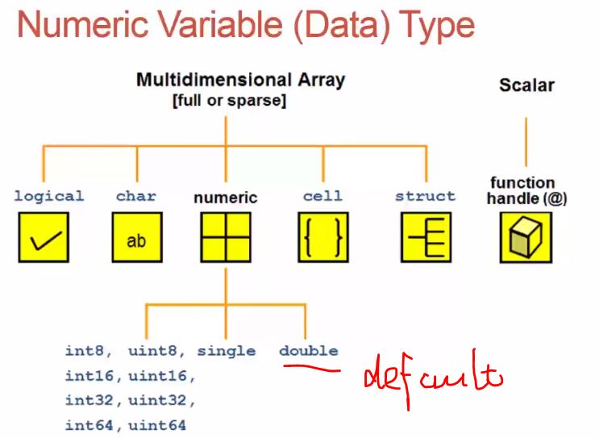
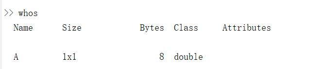
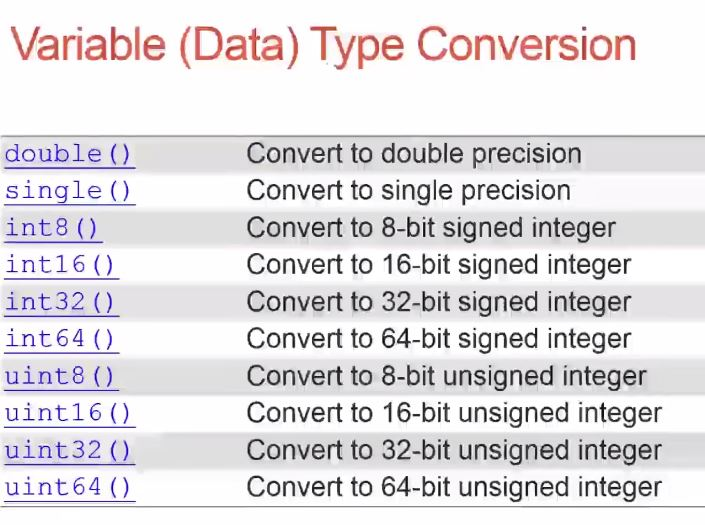
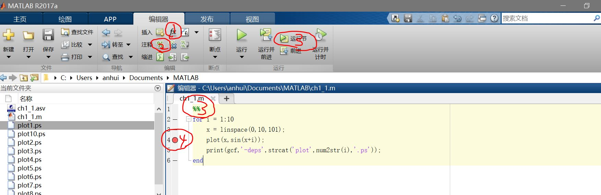
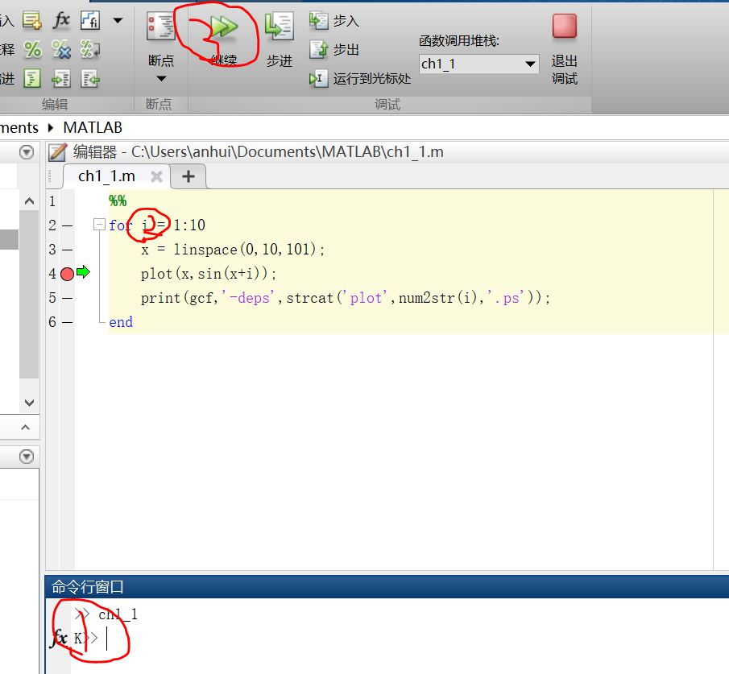

MATLAB数据类型
用whos查看所有变量信息和类型
如果要看单个的，就在工作区双击变量查看
几个预定义的特殊变量：
- ans
- i or j
- inf : ∞
- eps: 2.24e-016
- NaN: Not a Number
- pi: Π
numerical数据类型转换：
Display format
| Style | Example |
|---|---|
| format long | 3.141592653589793 |
| format short | 3.1416 |
| formant longE | 3.141592653589793e+00 |
| format shortE | 3.1416e+00 |
| format rat | 3/13 (用分数显示) |
script界面基本操作
- 查找内置function按钮。
- 单行注释按钮，如果需要注释多行，可以选中多行，右键选择comment。
- %%符号是分节(section)符号，可以只运行指定节代码。
- 左键点击行号后的横线设置debug断点。
debug模式
- debug模式下，>>变成K>>，说明在调试模式，可以在命令行输出查看变量。
- debug模式下，鼠标在某变量上悬停，就可以显示变量值。
- debug模式下的继续执行会运行到下一个断点。
智能缩进
选中→右键→智能缩进
if-elseif-else
1 | a=3; |
switch
1 | input_num = 1; |
while
1 | n = 1; |
for
for variable = start:increment:end
commands
end
1 | for i=1:5 |
tic-toc计算用时
1 | tic |
会输出时间已过多少多少秒，可以多次调用。
Tips for Script Writing
clear all
close all
使用;避免不想要的输出
使用…换行
1
2
3
4A = [1,2,
3,4] % 矩阵
B = [1,2,...
3,4] % 向量
Content of MATLAB Functions
edit(which('mean.m'))打开MATLAB内置的mean函数。
基本格式是
function outputs = file_name(inputs)
%Comment
code
end
User Define Functions
新建一个freebody.m，注意函数名和文件名相同。保存至main.m的同级目录下。
1 | function x = freebody(x0,v0,t) |
在main.m或command命令中调用：
1 | freebody(0,0,10) % 输出为ans = 490 |
多输出例子：function [a F] = acc(v1,t1,v2,t2)
Function Default Variables
这些内建参数是可以之间调用的。
| 内建参数 | 参数意义 |
|---|---|
| nargin | 输入参数个数 |
| nargout | 输出结果个数 |
| varargin | 输入参数变量大小的数组 |
| varargout | 输出结果变量大小的数组 |
Function Handles
匿名函数的作用，不用单独建立m函数了。
1 | f = @(x) exp(-2*x); |